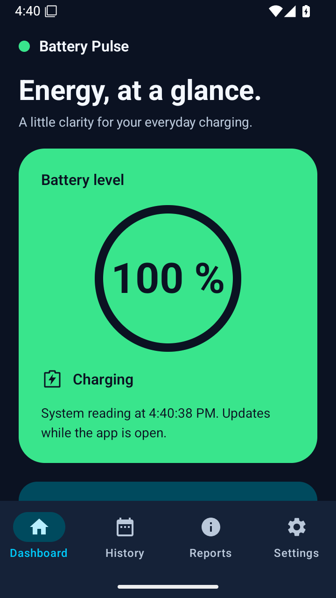
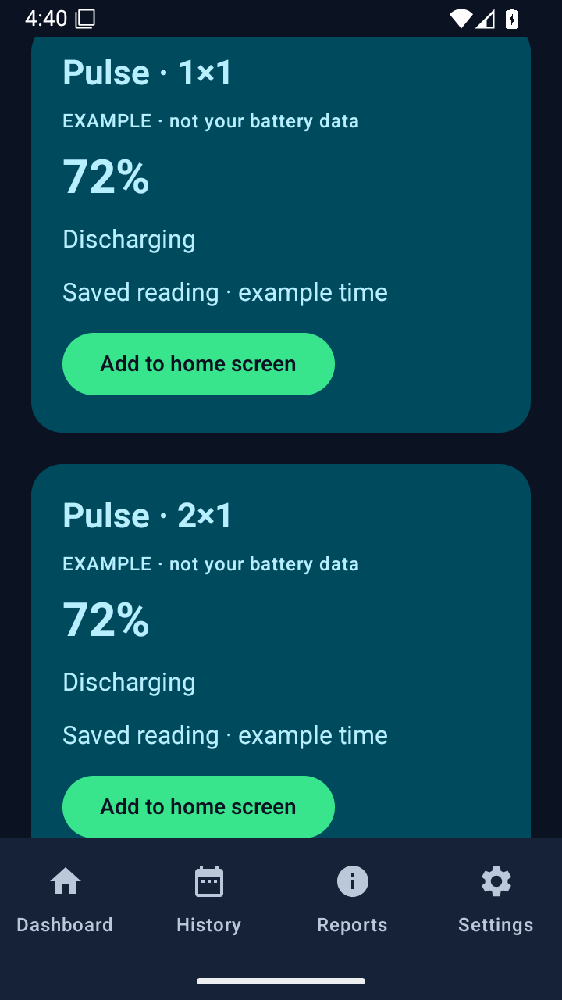

PRAXIS SCIENCE LAB / ANDROID
Battery Pulse
Live battery readings, local history, widgets, alerts and clear reports.
In testing Not yet available on Google Play.
Screenshots
Actual screenshots from version 0.10.0 (10).


Understand your battery with an original interface in electric green, cyan, violet and coral.
See live battery readings and the charging state reported by Android. Missing measurements stay unavailable, and estimates explain their source and limitations.
Free includes optional local history with seven-day retention, a 24-hour view, compact and wide widgets, level alerts and data controls. History collection is off by default.
When configured, a permanent Pro purchase adds 7/30-day views, 90-day retention, larger widgets, temperature alerts, weekly and monthly reports, CSV/JSON exports and no ads. No subscription.
English, Romanian and Spanish, with light, dark and system themes. Version 0.10.0 is in testing. Purchases and advertising are disabled in the local evaluation build until their services are configured.
Language
English, Romanian and Spanish.
Using the app
Android 8 or later. Battery Pulse is an information tool, not a hardware diagnosis, battery repair or safety alarm. It does not promise longer battery life or universally measure battery wear. Android can delay collection, widgets and alerts. Graph gaps and insufficient data remain explicit.
Praxis Science Lab is the publishing brand used by Traian Anghel. For support or privacy questions, email traiananghel@gmail.com. Include the app name and version. Do not send passwords, medical records, private recordings or other sensitive information.